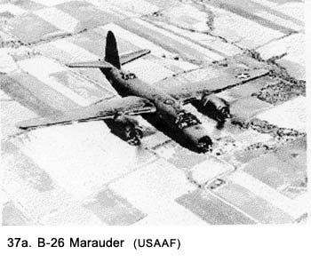

|
Table of Contents < - - - return Chapter 6 < - - - next
World War II Story by Robert F. Gallagher Chapter 5 - March Air Force Base Do what you can, with what you have, where you are. Theodore Roosevelt _______________________ After I had been at Camp Haan for several months, I decided to make my second attempt at applying to be an Air Cadet in the Army Air Force. I found out that they were being given over at March Air Force Base. Being that close would make it handy but I knew that there might be other obstacles. I knew that I would be required to get permission from my present unit to take the requirement tests. I had been indoctrinated well enough in military protocol by this time to know that I must start at the sergeant level of authority. Considering the caliber of high-ranking noncoms we had, I knew that they would not make it easy for me, but it was something I had to do. At the end of the row of huts where I lived was the orderly room. From the outside, it looked just like all of the other huts except it had a sign on the door identifying its use and a small bulletin board out front for posting rosters, such as lists of men who would be on KP duty, guard duty, and other assignments for the coming week. Also, there might be some kind of a bulletin regarding military news there. But, what was inside of the hut made it a place to avoid unless you absolutely had to go there. It was the office of the dreaded First Sergeant Monteleone, the irrational Captain Mc Kee, and the foul-mouthed cadre members who also spent a lot of time there. The battery clerk had some space in there, but, if we had something to ask him, we made a point of catching him outside at mail call to avoid going inside. I looked forward to going to the orderly room with my request to take the cadet tests with the same trepidation that I had experienced when I was sent down to see the principal for a disciplinary problem at Our Lady of Peace Grammar School back in Chicago some years earlier. Sister Sienna, the principal of the school, believed that she could cast out the demons that resided within all young boys, and even a few girls, by the use of force. With her flailing wooden ruler she had pounded my knuckles on numerous occasions until they hurt badly, and I anticipated further meetings with her with great apprehension. I now experienced a resurgence of that feeling as I approached the orderly room. We had been told to be sure and knock on the screen door and wait to be told to enter. This I did but, despite the fact that I could see several men inside the small room through the screen door, nothing happened. The knocking procedure had nothing to do with teaching us manners. It was just another way they had of showing their supreme authority over lowly recruits. Their purpose in setting this requirement was to make us feel so insignificant that they didn't even hear you knocking the first time. We had to try several times to get their attention. After a second knock, I was told to enter into the inner sanctum. I stepped in, closed the door and removed my fatigue cap, again, in keeping with prescribed protocol. Up until that point, everything was going right but something down deep told me that it would not last. Inside, there were three desks one for Monteleone, one for the battery clerk, and the third for Captain Mc Kee. Present at the time of my visit were Monteleone, the clerk, and one of the cadre members, better known as "Sergeant Lush," who was sitting in a corner on a chair that was tilted back on its two hind legs. He was reading a comic book with his bloodshot eyes only half open. Monteleone did not even look up from the paper he was studying. I nodded at the clerk, who immediately lowered his eyes so that he would not have to address me. He knew that nobody came into the orderly room unless he was desperate. Also, he had been at the job long enough to know that, regardless of the reason for the visit, there was trouble ahead. He looked more nervous than I did, and he was trying to avoid being identified in any way as a friend of mine, even a casual friend. I stood facing the cadre member, who gave up his "heavy reading" to address me. The conversation went like this: Sergeant Lush: "Wadda ya want?" Me: "I would like permission to go over to March Air Force Base to take the exams to become an Air Cadet." Sergeant Lush: "The answer is, no!" There ain't no one gonna take no fly-boy test and you ain't gonna transfer out of this outfit. Spend your time concentrating on what we're doing here instead of trying to get into that Air Force branch." He gave a snicker and looked toward Monteleone, who was still buried in his paper. They had a habit of glancing at one another frequently when they talked to us recruits. Without saying a word, it conveyed the message that said: "Watch me make this guy squirm." Me: "But, I took the tests before entering the service and I came close to passing. They (this would turn out to be the key word that set off the morons I was visiting) told me that when I got into service, I could take the tests again." This brought Monteleone out of whatever he was doing and he glared up at me. Monteleone: "Who told you that you could take the tests?" Me: "Some captain (again, the wrong word) who was there in Chicago where I took the tests originally." Monteleone, raising his voice: "Of all the goddamn things, I've heard in my eighteen years in the service, this is the first time I've had a f---ing recruit try and get something by using the influence of an officer to do it." Me: "I'm not using the officer, I just meant that…." Monteleone: "Shut up! Who the hell do you think you're talking to? You and nobody else is gonna transfer out of the 815th. Just because you don't think we're good enough for you don't mean you're gonna be no fly-boy." Sergeant Lush: "Yeah, this is a great outfit and you should be proud to be part of it" (another glance). Me: "I didn't say there was anything wrong with this outfit, I just want to be a pilot." Monteleone: "Shut up and get the hell out of here before I slap you on permanent latrine duty." I wanted to say more but I realized that it was no use arguing with either of these guys so I left. Again, I had hit a brick wall, and my dream about becoming a pilot was starting to look like it was just that: only a dream. Soon after that episode, Monteleone brought up the subject of a "fly-boy" while he had everyone in formation, but other than my crewmembers whom I had told about the incident, the rest of the men didn't know what he was talking about. I don't remember what else he said as he rambled on about being loyal to the great 815th, but it really didn't make any difference and I ignored it. I was back to my normal duties. At times, the army could get very hectic and exciting; but there were also extended periods of boredom that would generate thoughts of better things. Mainly I concentrated on "what might have been" if I had been accepted in the air cadet program. Despite failing the tests for a minor item and my turndown for taking them again by Monteleone, I still had that strong desire to be a pilot by getting into the Army Air Force. I thought about it constantly and was still planning on how to get to take the tests again. Being stationed right across the road from an air base was not any help. Listening to the planes take off and land, seeing the planes overhead on a daily basis, and observing the airmen when away from Camp Haan kept the idea, which had now become an obsession, fresh in my mind at all times. I began going over to March Air Force Base, across the road, on weekends, just to be near airplanes. It gave me goose bumps to watch the planes taxi about and then roar down the runway with their mighty engines pouring out full power. Seeing all of the airmen at the field with their silver wings and the air cadets whom I was fervently wishing to join, inspired new hope in me to continue my quest for a transfer. At first, I limited my visits to just standing around in the more public areas watching the planes land and take off, but eventually, I started to wander around into the hangers. There, I received a few inquisitive looks but nobody said anything to me. I made a point of turning my shoulder, with the "double A" (for antiaircraft) patch on it, away from prying eyes. While standing up close to a plane, one day, a sergeant walked up and started to talk to me. He asked me if I wanted to go up on a flight and I jumped at the chance. It turned out that he was the crew chief of a B-26 twin-engine bomber called the "Marauder" (See Fig. 37a) that was going to be towing a target-sleeve behind it for aerial gunnery practice. It would be my first flight in an airplane. The crew chief and I sat right behind the pilot and co-pilot as we took off. We went out over the Pacific Ocean and soon six P-38 Lightning fighter planes showed up. They dove in at the target from all angles and fired their guns. They were using tracer bullets to direct their fire and to see what they were hitting. I crawled to the back of the plane, where the tail gunner would sit to watch the action. It was a spectacular sight. I was too big to sit in the gunner's seat, so I watched from a prone position. While flying with the crew of the "Marauder," I could not help but notice the friendly relationship between the officers and enlisted men. They were able to enforce a chain of command but still seemed to have great respect for each other's position. It was a refreshing change from the unit that I was attached to and reinforced my desire to join them. I went up in that same plane a total of five times in the period of one month, but the first flight was the only one that had gunnery practice. The others were just checkout flights for the pilots and crews. Each time we went up, the sergeant would give me the same parachute to wear. On the last trip, he told me that if I ever had to use it, I would have to open a flap and bend three wires down so that the chute would work properly. The bent wires kept the chute from opening accidentally. It's a good thing I never had to use it before that time. March Field was primarily a base for four-engine B-24 Liberator bombers. They would take off and land all through the day and frequently at night. We would often observe them flying above our camp, lining up in formation. One day, we spotted a column of black smoke coming up near the end of the runway and we knew immediately that one of the planes had crashed. About half an hour later, we heard a huge explosion in our camp, and again the column of smoke appeared. This time, one of the planes had plowed right through the front gate of our camp, killing a lot of people on the ground in addition to those in the plane. A total of six planes went down that day. We found out that, after the first crash, the air commander of the base had ordered all planes to go up so that the crews would not lose their nerve after seeing the accident right on the base. It turned out to be a poor decision because the problem causing the crashes was bad gasoline and many of the planes on the base had it. From what we heard later, there were a lot of emergency landings in addition to the crashes. Each time I returned to Camp Haan after being over at March Field, I always felt a great letdown as my duties became very routine and even boring. Every day there was more of the same kind of training that was now being repeated over and over again. What I was not prepared for was the change that was about to take place. Our battalion was going to leave Camp Haan for desert training where boredom would be the least of my worries. Chapter 6 < - - - next Table of Contents < - - - return
Footnotes and Source of Photographs. Copyright, Robert F. Gallagher, 1999 - 2015, all rights reserved on all images and content.
|